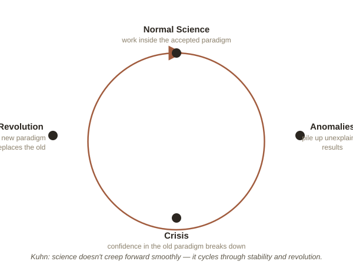

Chapter 1: What Makes a Theory Scientific?
Astrology makes predictions. So does string theory. So does your horoscope app. Only some of these are usually called "science." Philosophy of science asks what actually earns that label — a question that turns out to be much harder to answer cleanly than most people assume, and one working scientists mostly never have to think about, because they're busy doing science rather than defining it.
The demarcation problem
Philosophers call the challenge of drawing a clean line between science and non-science the demarcation problem (demarcation = marking the boundary between two things). An early 20th-century answer, from a group called the logical positivists, was verificationism: a claim is meaningful and scientific only if it can, at least in principle, be confirmed by observation or experiment.
The problem is that confirmation is cheap. Believers in astrology can always point to the times a horoscope "matched" — while quietly not counting the many times it didn't. Confirming instances are easy to find for almost any claim if you're willing to interpret loosely enough and ignore the misses. Verification alone doesn't sort science from pseudoscience; it just rewards whoever is best at finding matches after the fact.
Popper's flip: what matters is what could prove you wrong
In the 1930s, Karl Popper proposed the opposite test, now called falsificationism. A theory is scientific, in Popper's view, not because it can be confirmed, but because it makes risky predictions that could, in principle, turn out to be false — and it survives the attempt to disprove it anyway.
Compare two claims. "Heavy objects fall at roughly 9.8 m/s² near Earth's surface" is falsifiable: drop something, measure it, and the theory could have failed the test but didn't. "The stars influence your personality in ways too complex and personal to test directly" is not falsifiable — it's built so that no possible observation could ever count against it. Popper's point wasn't that unfalsifiable claims are false. It's that they aren't science at all — they might be meaningful in some other way (a philosophy, a belief system), but they don't earn the specific label "scientific theory" that comes with real predictive risk.
Popper's favorite real-world example was Einstein's general relativity, which in 1915 made a very specific, very risky prediction: starlight passing near the sun should bend by a precise, calculable amount, visibly shifting where stars appear to be during a total solar eclipse. In 1919, astronomer Arthur Eddington measured exactly that during an eclipse — a prediction so exact it could easily have been proven wrong, and wasn't.
Kuhn: science doesn't progress in a straight line
Popper's picture still assumes theories get tested one clean prediction at a time. In 1962, Thomas Kuhn argued the real history of science looks quite different, and far less tidy.

Most of the time, Kuhn said, scientists work inside a shared paradigm (a whole framework of accepted theories, methods, and assumptions everyone in a field works within) — this is "normal science," filling in details rather than questioning the foundations. Odd results that don't fit get set aside as anomalies, minor puzzles to solve later, not reasons to panic. Anomalies usually stay that way — until enough of them accumulate that trust in the paradigm itself starts to crack. That's a crisis. Eventually, a new paradigm emerges that explains both the old evidence and the anomalies, and the field switches over almost all at once — a scientific revolution. The shift from Newtonian physics to Einstein's relativity is Kuhn's textbook example.
The uncomfortable implication is that science doesn't purely accumulate truth in a straight upward line, the way it's often taught. It has long calm stretches, interrupted by sudden, almost social upheavals in what the whole field agrees counts as an acceptable explanation. Popper and Kuhn together don't just tell you what makes one theory scientific — they describe two different scales at which the same question keeps showing up: one prediction at a time, and one era at a time.
Try this
Ideas for noticing or testing this in your own life.
- Try Popper's question on the next big claim you hear — a diet trend, a self-help idea, a conspiracy theory: what specific observation could prove this wrong? If nothing could, that's worth noticing.
- Notice your own "anomaly denial": watch for a small piece of evidence that doesn't fit something you believe, that you're tempted to wave away rather than actually weigh.
Worth pulling on?
A few loose threads from this chapter — if any of these genuinely grab you, that's a good sign of where to go next.
- For decades, doctors dismissed the idea that stomach ulcers were caused by bacteria — the medical establishment "knew" ulcers came from stress and acid. In 1984, researcher Barry Marshall got so tired of being ignored that he drank a petri dish of the bacteria himself to prove it, gave himself an ulcer, then cured it with antibiotics. He won a Nobel Prize in 2005. A genuinely recent, real-world case of Kuhn's "anomaly resistance" in action.
- Popper's own falsifiability criterion has been accused of failing its own test — critics ask what observation could ever falsify "a theory must be falsifiable to be scientific." It's a classic, slightly dizzying, self-referential problem in philosophy. → Ties directly into Epistemology — both chapters are really circling the same question of what counts as a justified claim.
- "Paradigm shift" escaped academic philosophy decades ago and now shows up in business pitches and marketing decks, almost always stripped of what Kuhn actually meant by it — a good case study in how a precise idea gets diluted once it goes mainstream.